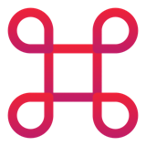
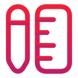

Cheat sheet · Bootcamp AI-Driven Development · Module 1 · 1/2
Bases du développement agentique
L'IA amplifie le développeur, elle ne le remplace pas. C'est vous qui pilotez.
 AI-driven dev, pas vibe coding
AI-driven dev, pas vibe coding
Vibe codingCode caché, prototypes d'applis neuves (Replit, Lovable, Bolt).
AI-driven developmentL'IDE reste l'interface, toute appli, legacy compris (Claude Code, Copilot, Cursor…).
Un code aussi proche que possible du vôtre, dont vous restez responsable.

Claude Code : modes de permissionShift+Tab| Mode | Ce qui demande une validation |
|---|---|
| default | Tout (fichiers, commandes) |
| acceptEdits | Commandes seulement |
| plan | Lecture seule : un plan, aucune édition |
| auto | Un classifieur vérifie chaque action |
Commencez en plan, validez, puis acceptEdits.

CLAUDE.md : les instructions custom
- Chargé au début de chaque session : pratiques de code + infos générales sur l'appli.
- Sous ~200 lignes, des règles vérifiables (« Lance
npm testavant chaque commit »). /initgénère un point de départ. Portées : projet, perso (~/.claude/), organisation.

Greenfield : le workflowDéfinir
›
Architecturer
›
Scaffolder
›
Feature par feature
- Une spec en markdown : elle devient le contexte de l'IA. L'architecture en mode plan, sans code.
- Par feature : planifier, implémenter, relire, refactorer, documenter.
 Brownfield : faire évoluer l'existant
Brownfield : faire évoluer l'existant
- Fichiers de contexte :
/init, relu, puis un fichier par module. - Contraindre aux patterns existants : « n'introduis aucun nouveau pattern ».
- Tests sur le legacy d'abord ; tests de caractérisation avant un gros refactor.
Identifier
›Tester
›Planifier
›Transformer
›Vérifier
›Relire
 Outiller : skills, agents, MCP
Outiller : skills, agents, MCP
Skill
SKILL.md : un savoir-faire reproductible, chargé quand sa description correspond. Une skill par tâche.Sous-agentSa propre context window et ses tools ; seul le résumé revient.
MCP : l'« USB des outils IA » (resources, tools, prompts). Chaque MCP activé, c'est du contexte.
 Les 4 réflexes
Les 4 réflexes
- Cadrer : les instructions custom.
- Planifier : le mode plan.
- Outiller : skills, agents, MCP.
- Relire : les tests, le diff.